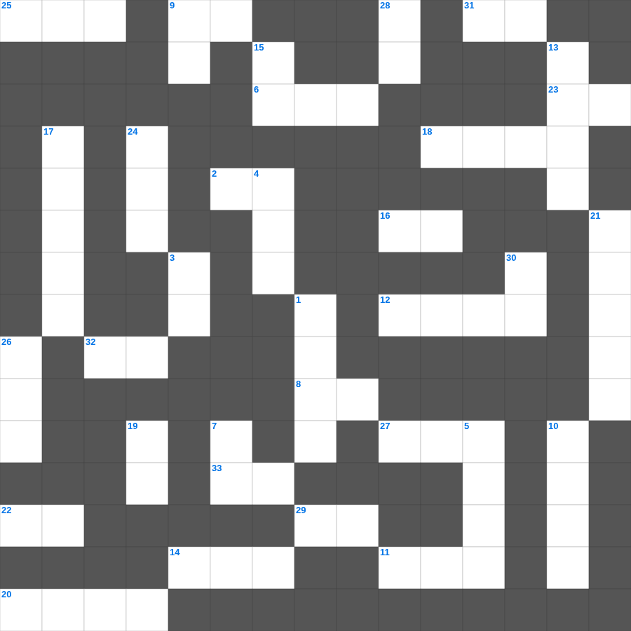

요한일서: 사랑의 서신
📌 서비스 정의
십자가로세로는 교회 주보와 주일학교에서 사용할 수 있는 성경 기반 가로세로 퍼즐 서비스입니다. 성경 인물, 사건, 핵심 구절을 바탕으로 제작되었습니다. 온라인 풀이 및 인쇄 기능을 제공합니다.
📖 요한일서란?
요한일서는 예수 그리스도가 참 하나님이자 참 사람임을 확증하며, 하나님과 형제를 향한 사랑이 참된 신앙의 증거임을 강조하는 서신입니다.
📚 요한일서의 주요 사건·주제
빛 가운데 사는 삶에 대한 가르침 · 하나님의 자녀로서의 신분 · 사랑의 계명에 대한 강조 · 거짓 영을 분별하는 법 · 영생의 확신에 대한 가르침
요한일서를 주제로 한 요한일서 성경 퍼즐입니다. 35개의 단어를 맞춰보세요! 가로세로 낱말 퍼즐 형식으로 요한일서의 핵심 내용을 재미있게 복습할 수 있습니다.

📝 가로 힌트
1. 겨자씨 한 알 만한 믿음이 있으면 이 이것을 옮기리라
2. 내가 곧 길이요 이것이요 생명이니
6. 이스라엘이 광야에서 보낸 시간(년)
8. 다윗이 사울을 위해 연주한 악기
9. 지성소와 성소를 나누는 두꺼운 천
11. 좁은 문으로 들어가기를 이것하라
12. 성전의 기초석
14. 끝까지 이것하는 자는 구원을 얻으리라
16. 가난한 과부가 드린 두 이것
18. 모세가 홍해를 가르고 마른 땅처럼 건넌 일
20. 요나를 삼켰던 존재
22. 세상에서 가장 먼저 난 사람은?
23. 하나님이 세상을 이처럼 하사 독생자를 주셨으니
25. 바울이 강가에서 루디아를 만난 성
27. 그물에 가득 찬 각종 이것
29. 마음이 가난한 자가 받는 복
31. 성막 입구의 방향
32. 여호와 이것: 평강의 하나님
33. 너희 죄를 서로 이것하며 병이 낫기를 위하여 서로 기도하라
📝 세로 힌트
1. 예수님이 산 위에서 전하신 복음의 핵심
3. 구원의 이것과 성령의 검
4. 이사악의 아내
5. 항상 이것하라
7. 미리암이 홍해 건넌 후 손에 든 악기
9. 지성소와 성소를 가로막고 있던 천
10. 교회는 그리스도의 몸
13. 범사에 이것하라
15. 멜리데 섬에서 바울을 문 동물
17. 노아의 방주를 만든 나무
19. 죽음에서 다시 살아나는 것
21. 바울이 유두고를 살린 사건
24. 바울이 로마로 가다 난파된 섬
26. 노아의 방주에 비가 내린 일수
28. 영들 분별함과 각종 이것 말함
30. 예수님의 무덤을 막았던 것
🧩 이 퍼즐에서 배우는 내용
이 퍼즐은 요한일서: 사랑의 서신의 핵심 단어와 개념을 자연스럽게 복습할 수 있도록 구성되었습니다. 주일학교 수업이나 개인 성경공부에서 학습 내용을 점검하는 용도로 바로 활용할 수 있습니다.
🧑🏫 교회 교육 자료 활용
이 퍼즐은 주일학교 교재 추천 자료로 활용할 수 있고, 주일학교 주보에 넣기 좋은 분량으로 구성되어 있습니다. 수업용 주일학교 교안에 활동지로 붙이거나, 예배 후 복습용 주일학교 공과교재로 바로 사용할 수 있습니다.
🏷️ 키워드
요한일서 성경 퍼즐, 요한일서, 십자가로세로, 성경퀴즈, 말씀퀴즈, 가로세로퍼즐, 주일학교 교재 추천, 주일학교 주보, 주일학교 교안, 주일학교 공과교재